热点2022年11月|11.25：国际消除对妇女暴力日

1
女权世界长这样：新修订的妇女权益保障法获通过
上周，男女平等基本国策被纳入国民教育体系，新修订的妇女权益保障法获通过。
一周性别热搜亮点+简评：
🍀 #宣萱回应王宝钏挖野菜#
喜见宣萱获得一波热度。她在许多港剧中留下的职业女性的经典形象，是很多小伙伴青春中美好的回忆。
推荐7月27日《鲁豫有约大咖一日行》“宣萱：开心就好”那期。她在其中分享了许多女权观点。
🍀 #媒体报道涉及妇女事件应客观适度#
@中国新闻网 ：一些媒体在进行报道时违反法律法规公开当事人隐私和个人信息，甚至进行与事实不符的宣传报道，侵害妇女的隐私权、名誉权等人格权益，应当加强规范。
对此，修订草案三审稿增加规定：“媒体报道涉及妇女事件应当客观、适度，不得通过夸大事实、过度渲染等方式侵害妇女的人格权益。”
根据修订草案三审稿，各级人民政府和有关部门应当采取必要措施、加强贫困妇女、老龄妇女、残疾妇女等困难妇女的权益保障，按照有关规定为其提供生活帮扶、就业创业支持等关爱服务。
🍀 #新修订的妇女权益保障法获通过#
关心《妇女权益保障法》的朋友，欢迎阅读：
收藏！新修订的妇女权益保障法最全要点来了
新闻 | 《中华人民共和国妇女权益保障法》新旧法条对比
——
数据来源：微博历史热搜-微博热搜搜索引擎
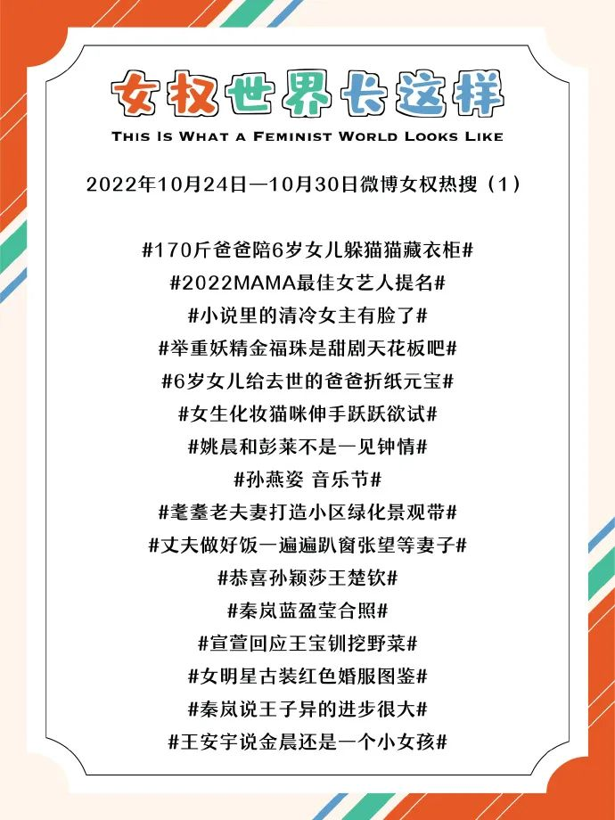
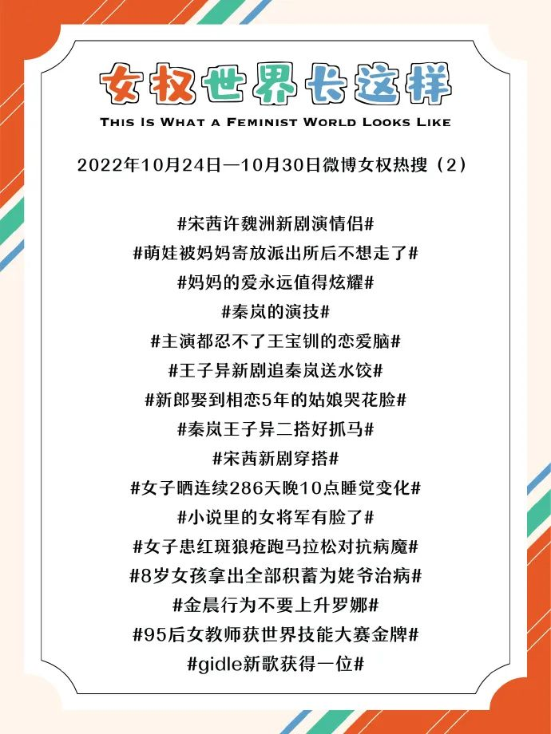
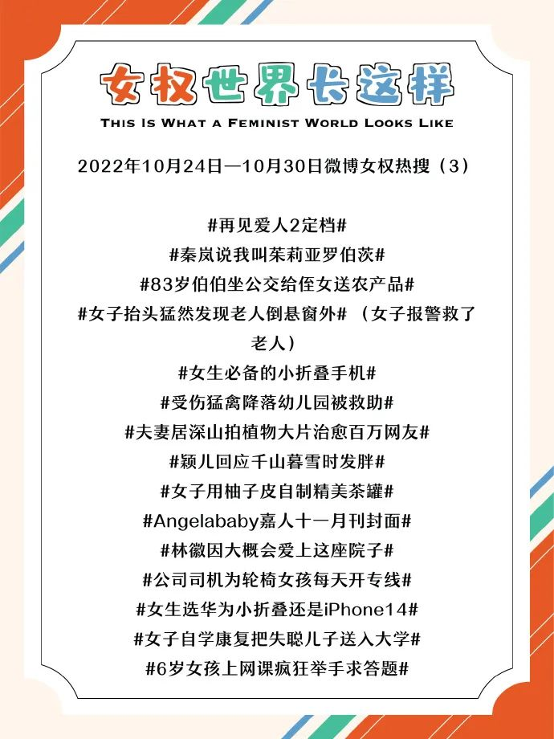
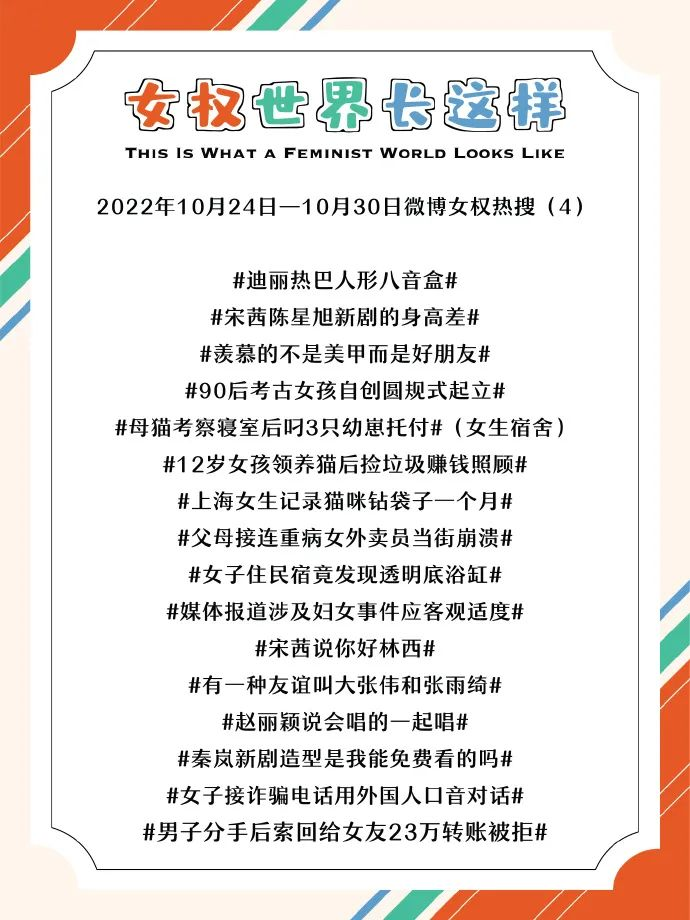
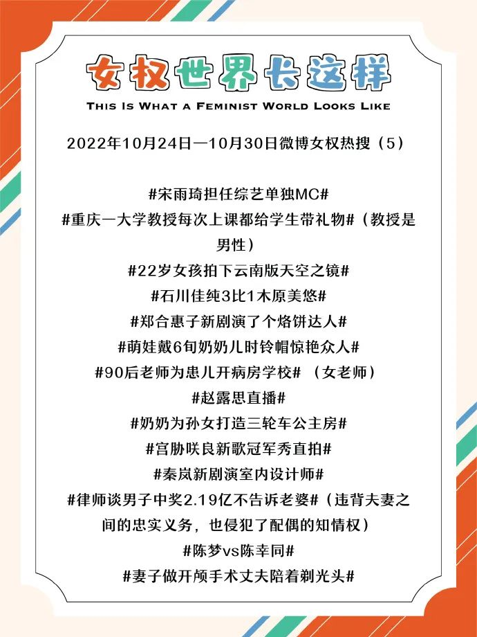
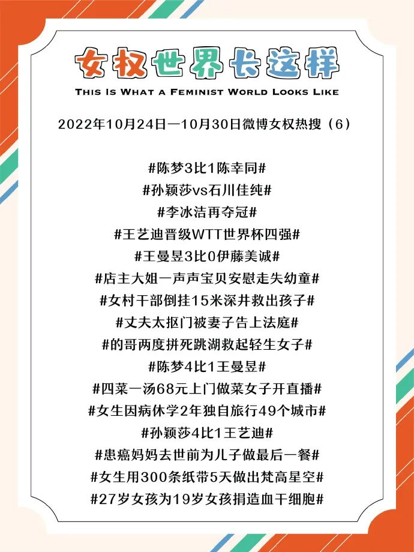
2
女子请假奔丧超期一天被扣三千
【公司：直系亲属也只有3天假 奶奶不属于直系亲属】李女士是长沙一家传媒公司的女主播，上个月因奶奶意外去世，她向公司申请了休假4天回家奔丧，可由于回程后超期一天，让她的工资被扣除了一大半，申诉时还被踢出工作群，负责人称，李女士当时一没有病假条，二没有拍照或者视频，“奶奶不属于直系亲属，直系亲属也只有1-3天丧假”，双方就公司规定提出了不同的理解，李女士气愤道：“你现在是让我去拍奶奶下棺材的视频吗？”
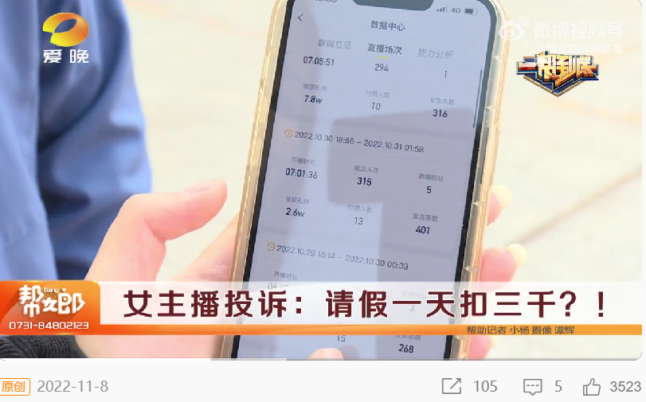
3
#95后宝妈带1岁孩子上班# ：为早日实现家庭理想买房安家
据@后浪视频 报道：近日，贵州贵阳。95后宝妈带1岁宝宝上班，为早日实现家庭理想买房安家。当事人刘女士称，带孩子找工作几乎总被拒绝，很感谢好心老板给她机会，还给她一家留宿舍。老公月薪5千她3千，每月还能剩下不到5千元，奋斗的目标总会越来越近，日子总会越来越有盼头。
男女平等还是得共同承担育儿义务，应提倡父职，不能一味靠女方。
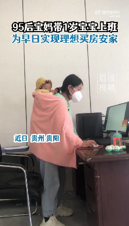
4
明确了！深圳痛经假经确诊可休1到2天！
除了加剧就业性别歧视以外有什么作用吗？痛经假不是深圳第一个实施，之前的颁布的省份也没法落地。确实痛经可以走病假流程，单独拎出来完全没必要。
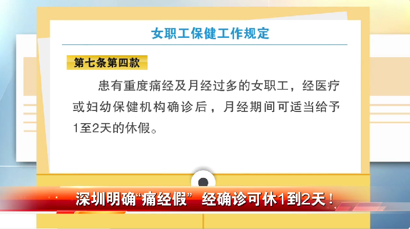
5
女权世界长这样：性别类热搜书写建议
在近来的热搜中，可以观察到性别类热搜的几大特点：
1. 有大量描述女性无私奉献、助人的热搜，但描述男性类似行为的热搜并不多。
2. 描述各行业女性突出成就的热搜，常常会让人对女性的能力叹为观止，但这也让人发问：女性成就要获得舆论关注，是否都要达到逆天的程度才行？
3. 有关女性维权的热搜，一贯在每周的性别热搜中占据一定比例。女性维权意识高，是一个可喜的现象。含有“回应”二字的热搜，在一定程度上说明，女性的声音较以往受到了更大关注。
4. 在影视类热搜中，以女性名字开头的热搜在逐渐增多。不过，这些热搜的亮点依然集中于女性的外貌，如聚焦她们的“冻龄”状态和时尚选择。
5. 有关没有选择婚育的女性的热搜在增多。她们的生活状态和人生选择，会给网友不少启发。
6. 描述中老年女性生活状态的热搜，以她们的家庭角色（妈妈、奶奶、婆婆等）为主。描述女性家庭角色外有趣事迹的热搜还不够多。
7. 有关残障女性的热搜，集中于她们的惊人成就。但是，关于如何保障她们权益的热搜很少。
我们期待未来的性别类热搜，能更加重视女性的观点、技能、兴趣、维权效果。
一周性别热搜亮点+简评：
🍀 #四位女青年科学家分获百万大奖#
@中国妇女报：10月31日，2022达摩院青橙奖名单公布，首次有 4 位女青年科学家获奖，每人奖金为一百万元。来自清华大学的吴昊，“从不觉得女生不适合学数学”，她师从两位菲尔兹奖得主，用7年解一道题，最终证明统计物理领域重要猜想；另一位清华女科学家同丹构建了能源-经济-排放-协同治理间的交叉耦合模型，为减污降碳政策提供理论基石；西湖大学生命科学学院副研究员白蕊参与并主导了全球唯一覆盖完整RNA循环的剪接体系列成果；浙江大学女科学家杨树研制出高压、高频、高效的新型垂直氮化镓功率器件，攻克了长期困扰氮化镓器件的动态性能退化难题，她希望“所有女性科学家都能勇敢追梦”。祝贺！
🍀 #29岁女科学家发6篇Science获百万大奖#
29岁的白蕊首次揭示了剪接体重塑的分子机理，并开辟了U12型剪接体研究方向，也是世界上唯一一个捕获全部类型剪接体团队的核心人员。目前，她已经以第一和共同第一作者身份在Science上发表6篇论文，实现多项世界级突破。她是内蒙古农民世家子弟，清华大学生物学院科研狠人，西湖大学生命科学学院博士后，登上了2020年中国福布斯30岁以下精英榜、2021年福布斯亚洲30岁以下精英榜。近日，她因在RNA剪接体领域的突出贡献，获评2022达摩院青橙奖。
究竟什么是剪接体？白蕊解释说，“基因通过RNA传递遗传信息，指导蛋白质完成各类生命活动。但基因不是连续的序列，是片段式的，基因在进行传递时，有效的遗传信息和‘无效’的信息都会被保留，这就需要剪接体就把‘无效’的信息剔除，把有效的信息按序拼接在一起。”她打了个比方，就像电影剪辑师，筛选有效的片段，才能呈现出一段生动的画面。
推荐阅读：白蕊：人类基因“剪辑师”
🍀 #云南姑娘种的咖啡豆走进联合国#
叶萍2010年开始带村里姐妹种咖啡。起初的八年，她自己从未喝过咖啡；后来，为提升云南咖啡的品质，她学着品鉴香气，尝试改良，还获得行业大赛第一名。2021年，她的咖啡豆被当作礼物送给联合国安理会成员国代表。“我的目标是让全世界知道，中国也能产出自己的好咖啡。
🍀 #女教师上网课后去世警方已介入调查#
10月30日，河南省郑州市新郑市三中历史教师刘某某被发现死在家中。她的病历上写着：猝死。视频和图片显示，10月初至死亡前，刘某某给学生上网课时多次遭到网暴，具体行为有：黑客潜入直播间扰乱课堂秩序、污言秽语骂人等。
11月1日，她的女儿在微博发声求助。新郑市委市政府高度重视，公安、教育等部门成立的专班正在介入处理此事。
🍀 #妈妈带男童进女浴室遭投诉反不满# & #宝妈带2岁儿子进女厕被骂没素质#
这两个热搜，都说明了在公共场所设置无性别公厕和浴室的重要性。同时，在类似的新闻中，孩子父亲的缺席很少被讨论。这是否体现了“妈妈的责任是带孩子”的成见，依然普遍存在？
——
数据来源：微博历史热搜-微博热搜搜索引擎
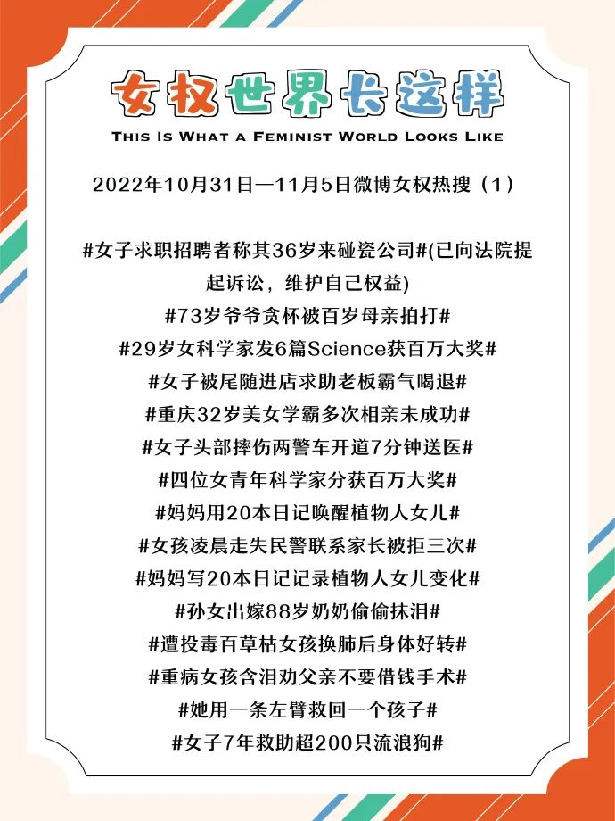
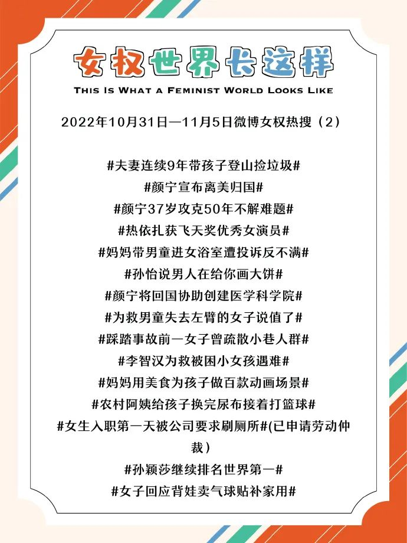
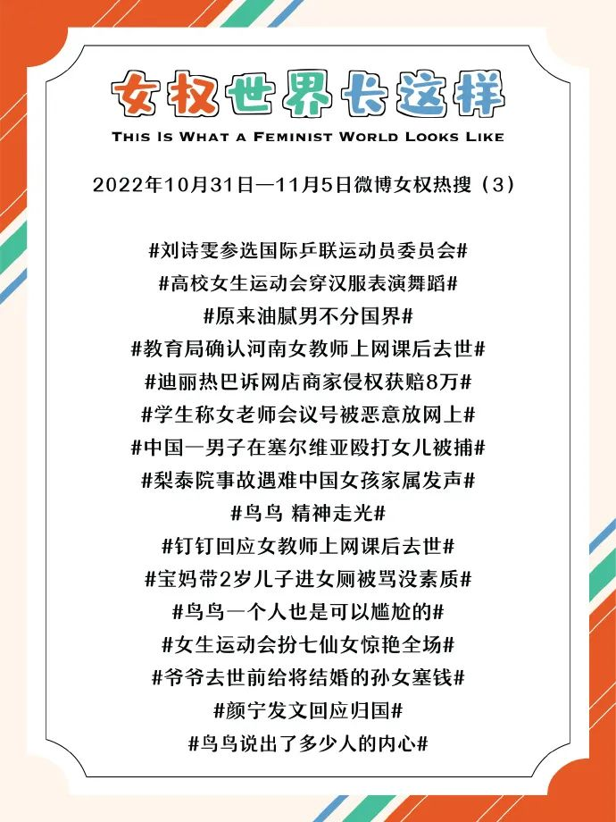
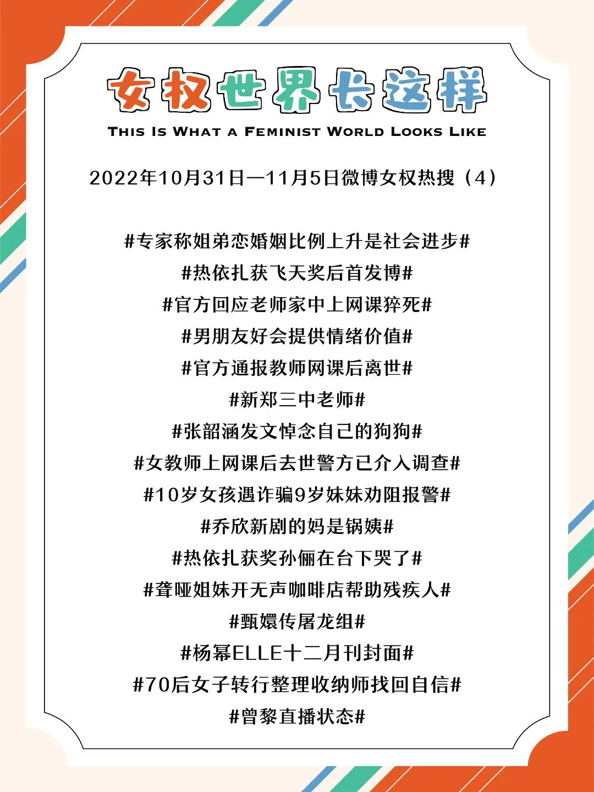
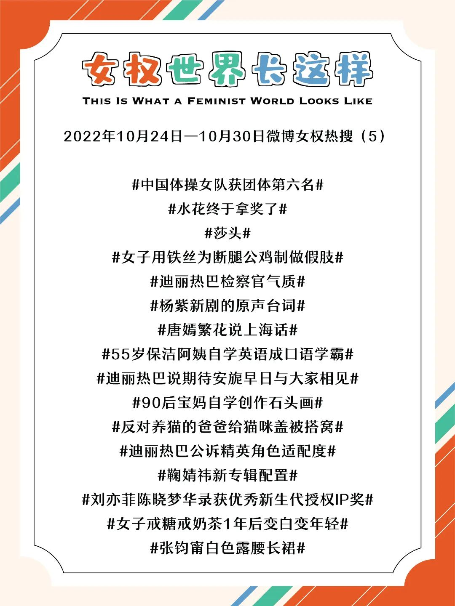
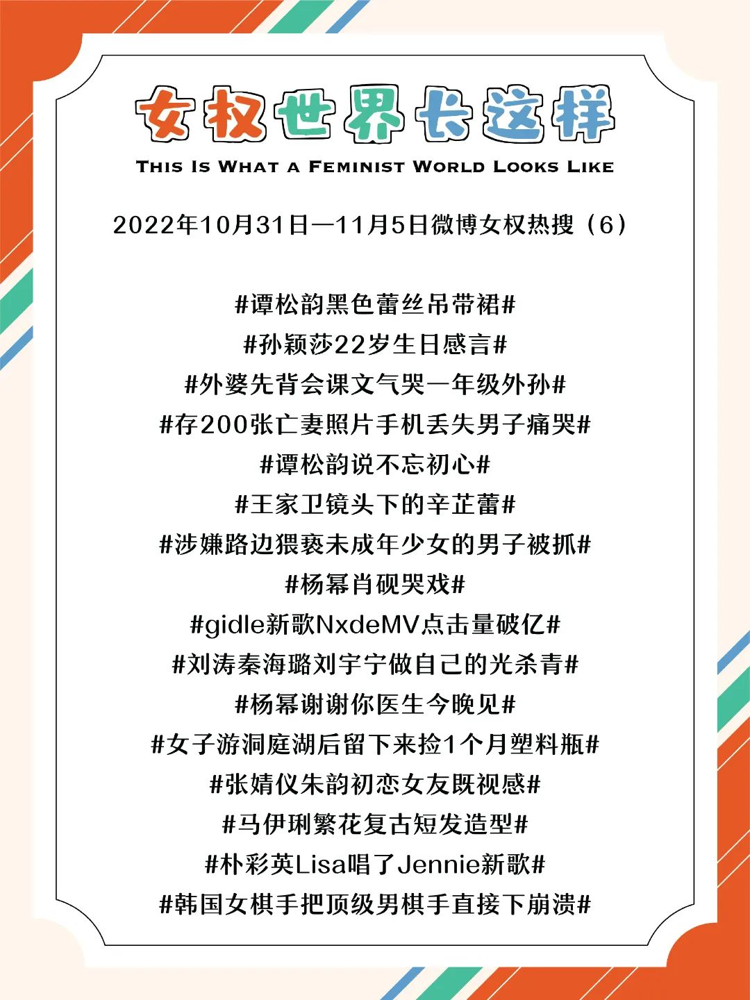
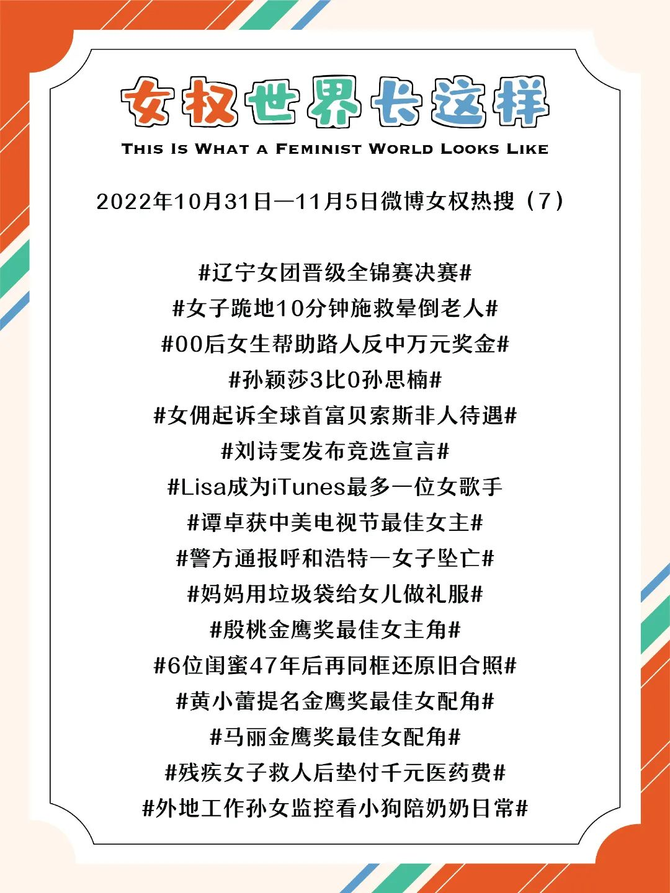
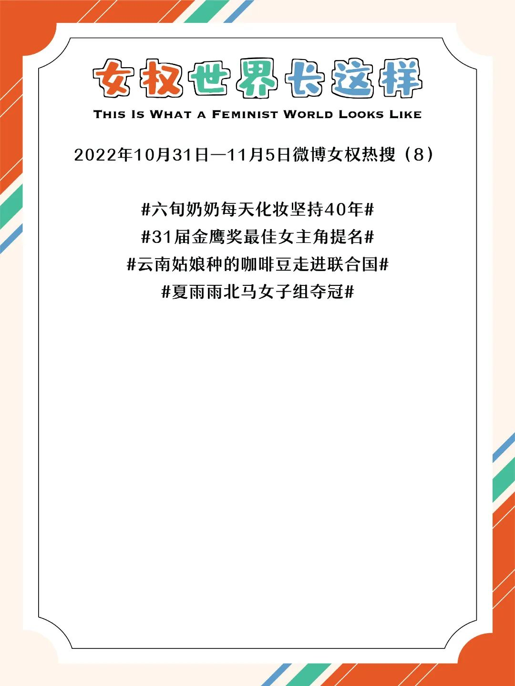
6
大S否认吸毒和出轨
太可怕了，不愿履行法院调解书的汪小菲，把大S一家骂了个遍，连小孩都不放过，汪小菲妈妈还通过骂大S一家的方式疯狂直播卖货，然后大家拍手叫好。
依据大S的声明，他们的离婚协议根本不是私下签署的，是大S起诉到法院，在法院法官的主持下，双方及双方律师都在场的情况下，双方就离婚相关事宜达成一致意见后，由法官对约定内容的合法性进行审查后，法院出具法院调解书确定双方就离婚相关事宜达成的约定，该法院调解书具有同法院判决书同等的法律效力，一方不履行的情形下另一方可直接向法院申请强制执行。
就这样一份具有法律效力的法院调解书，汪小菲不愿履行，还把大S拉黑了，而且大S披露不愿履行的部分不是所谓的家用，而是【孩子的存款】，大S无奈之下向法院申请强制执行，结果汪小菲及其母亲把大S一家骂了个遍，连小孩都不放过，还故意引导舆论认为汪小菲离婚后养着大S和大S现任老公光头，把汪小菲塑造成“绝世大冤种”的形象，把大S一家塑造成十恶不赦的吸血鬼形象。
都在说是汪小菲养着光头，替汪小菲不值，多可笑，大S现在住的房子在离婚时约定归大S所有，从法院调解书生效那一刻起，这套房产就是大S自己的财产，她拥有独立处分/使用这套房产的权利，其他人无权干涉，这个其他人当然包括前夫汪小菲，所以说什么光头住汪小菲的房子真是可笑至极，那房子是大S的，一定要说谁养光头，那也是人家大S自己，而不是汪小菲，别抢大S的“功劳”。
有人说那个房子是汪小菲挣钱买的，别逗了，大S才是这一家子挣钱的流量密码，汪小菲“发疯”世界人民乐意看，真不是因为他是汪小菲，而是因为他是大S的前夫，就像光头现在在舞台上跳舞大家愿意看，也不是因为他是光头，而是因为他是大S的现任老公。
那个房子是大S和汪小菲婚姻关系存续期间的夫妻共同财产，且只是他们其中一处夫妻共同财产，汪小菲那些年把大S女明星的价值利用到极致，大S也配合利用自己的明星效益帮着挣钱，S.hotel就是这种挣钱模式【现在的麻六记其实也是这种挣钱模式，只不过S.hotel是利用秀恩爱挣钱，麻六记是利用秀仇恨挣钱】，所以婚姻关系存续期间他们的钱不是汪小菲自己一个人挣的，是大S和汪小菲一起挣的，在离婚时大S分得现在住的房产，汪小菲分得S.hotel相关的财产，大S可没白拿一分钱，更别提婚姻关系存续期间大S还生了两个孩子，孩子都跟汪小菲姓，大S负责照顾小孩。【注：大S说是汪小菲自己不要孩子的抚养权，但汪小菲一直在网上表演一个深爱孩子的父亲。】
更有人在疯传，小S在上海的房子也是汪小菲出钱购买的，真是啥都有人信，汪小菲自己发的微博里清清楚楚地写了小S在上海的房子是用小S的钱买的，只不过汪小菲说那个房子被小S老公用来养女人，想以此羞辱小S。看明白了吗？意思你小S太惨了，你出钱给你老公在上海买房子，但你老公用这房子养别的女人。
大S不是汪小菲的老婆，是前妻，大S离婚后是否再婚/和谁结婚/和新老公在哪里生活居住/家具是否更换是大S的权利，前夫汪小菲无权干涉，前夫汪小菲也无权以大S再婚为由不履行法院调解书。如果今天汪小菲能够通过公开辱骂/羞辱前妻大S一家的方式不履行法院调解书，那么未来会有无数个汪小菲，那些跟着叫好的人们尤其是女性，你们不害怕吗？
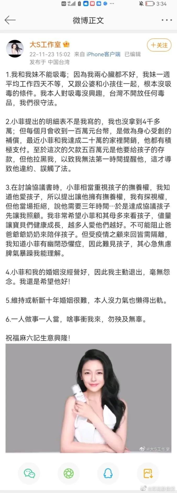
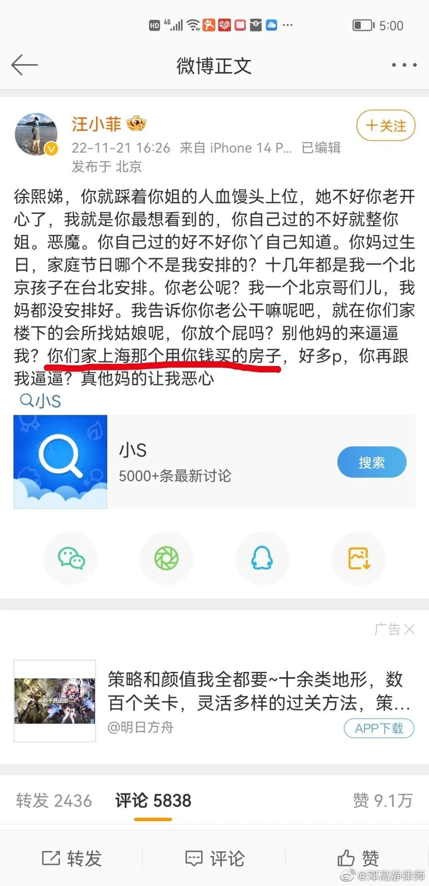
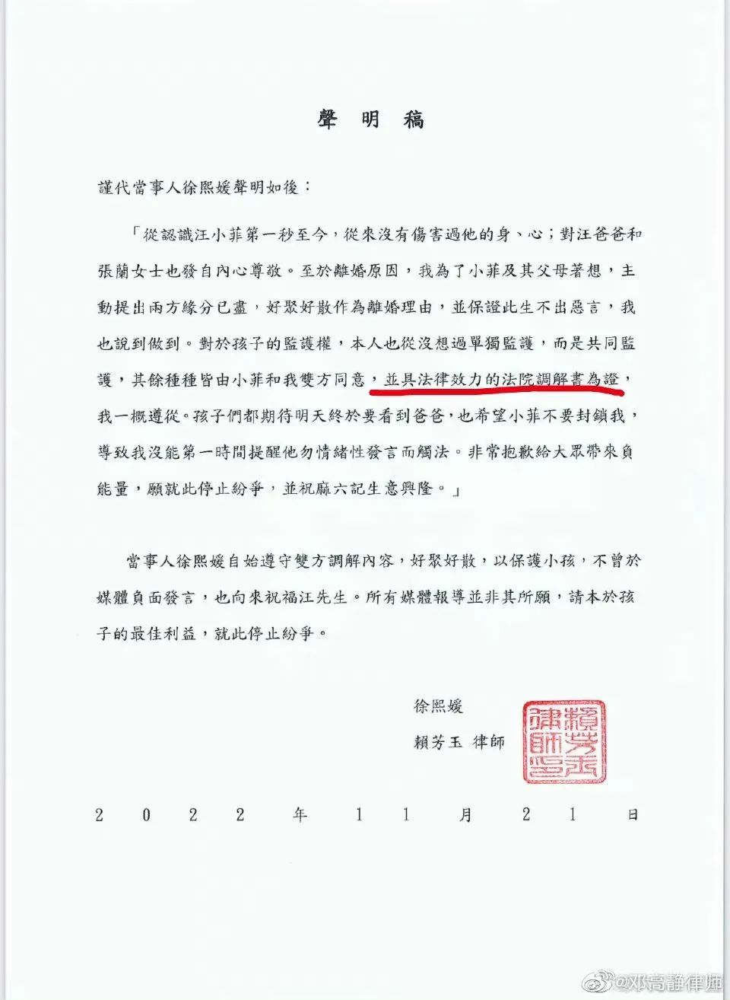
7
国际消除针对妇女暴力日
“16日行动”期间，全球各地会举办各式各样、“点亮橙色”的活动，比如用橙色来装点街道、学校和地标。因为橙色，是反对性别暴力的主题色，代表着对性别暴力可能带来的伤害的警惕；同时也是希望和鼓励的颜色，代表着对远离性别暴力威胁的向往。🧡
@橙雨伞限定版
【疫情这几年，性别暴力在网络蔓延】
今天是11月25日，是国际#消除针对妇女暴力日#，也是消除性别暴力“16日行动”的第一天。
消除性别暴力“16日行动”，从每年的11月25日开始，至每年的12月10日结束。今年，联合国以“团结起来：采取行动结束暴力侵害妇女和女童行为”作为“16日行动”的主题，呼吁更多人加入消除性别暴力的行动，支持全球妇女和女童并保障其权益。#性别暴力零容忍#
今年，我们希望让更多人了解到，性别暴力并不仅仅存在于周围的现实空间里，依靠互联网和移动通信技术搭建的平台中同样弥漫着多种形式的性别暴力。自疫情以来，人们工作、学习和日常交流的场所普遍转移至线上，这加剧了网络性别暴力发生的可能。
因此，我们希望通过今年的知识卡片，帮助人们认识到网络中存在的性别暴力，知晓网络性别暴力可能造成的伤害，并掌握应对的方法。
营造性别友好的网络空间，需要每个人的努力和参与，欢迎大家转发扩散，让更多人了解基于网络的性别暴力！
让我们“橙为彼此的力量”，共同努力，在消除性别暴力这条路上坚定地走下去。
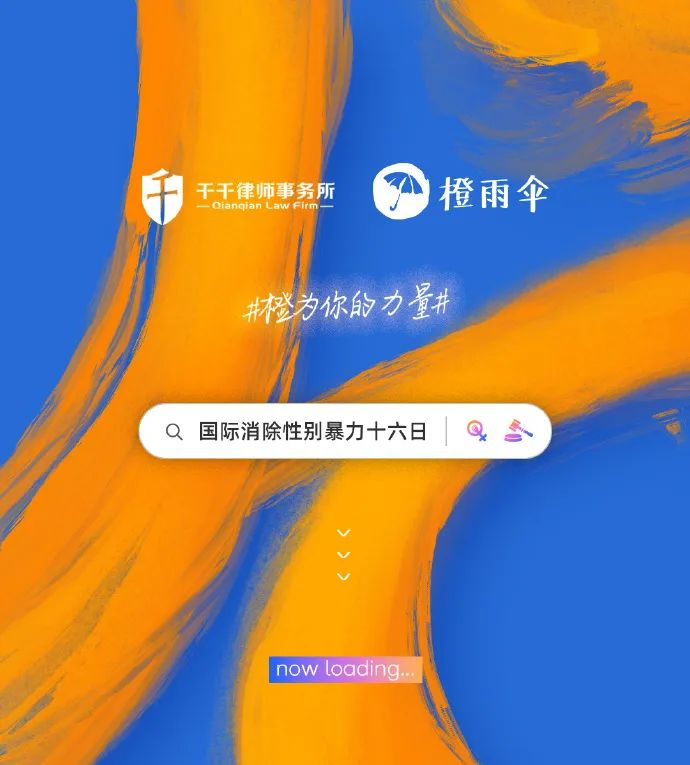
8
性别暴力不是家务事
@三三不上班:橙色被选定为反性别暴力的主题色。它温暖明亮，既代表对幸存者的鼓励和支持，也象征着对性别暴力的警惕。今天是反家暴日，面对家暴拒绝沉默。
@X次方女孩：
每一次打破沉默，就是在为反家暴出一份力。
这是关于「橙子的世界」。
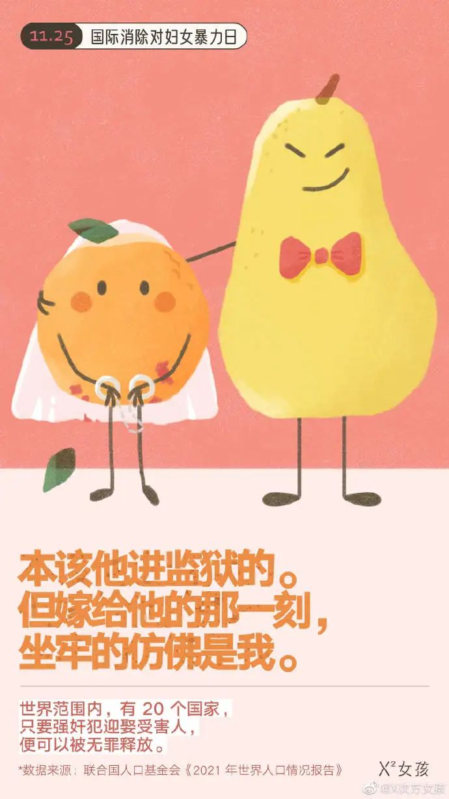
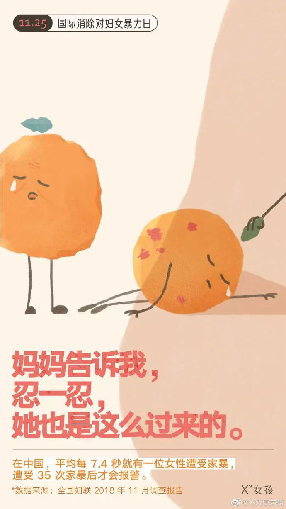
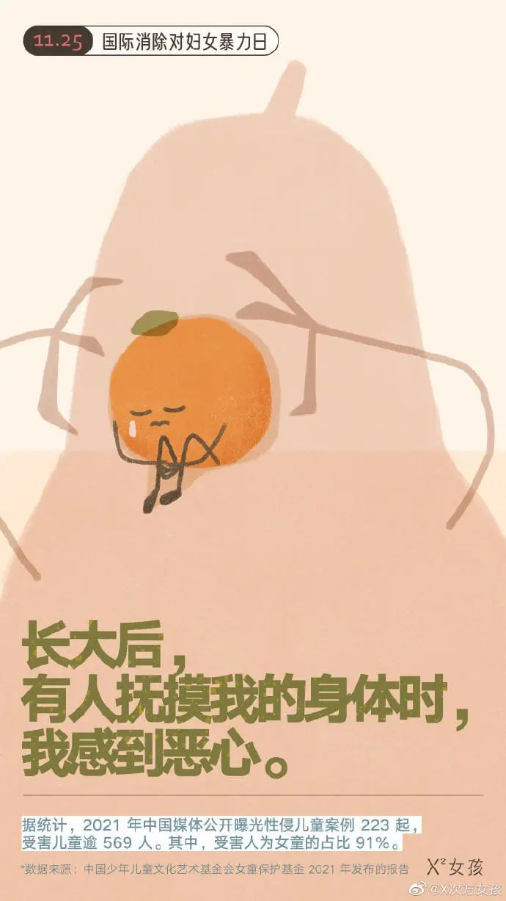
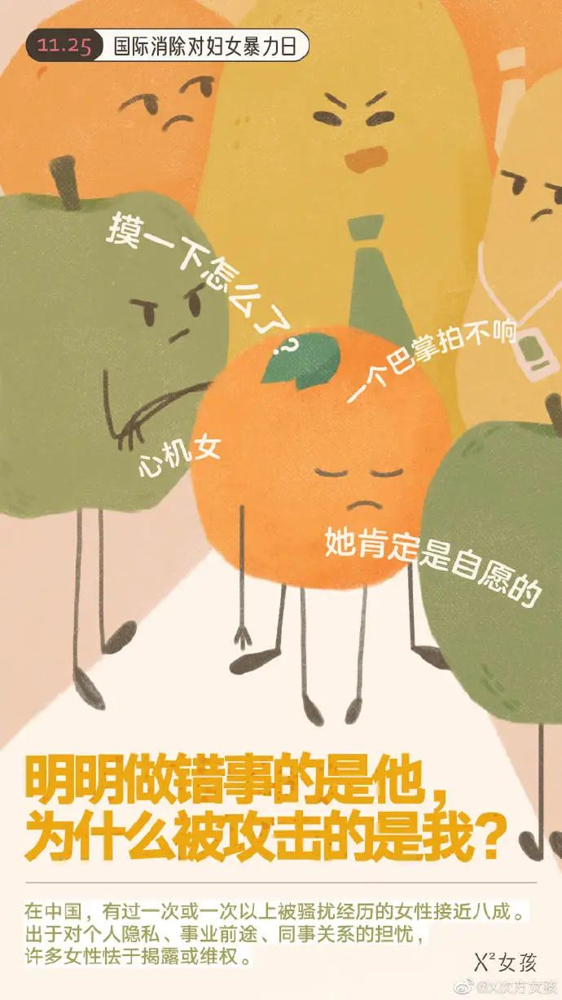
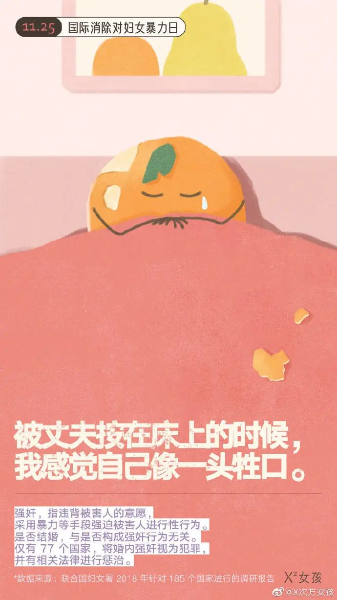

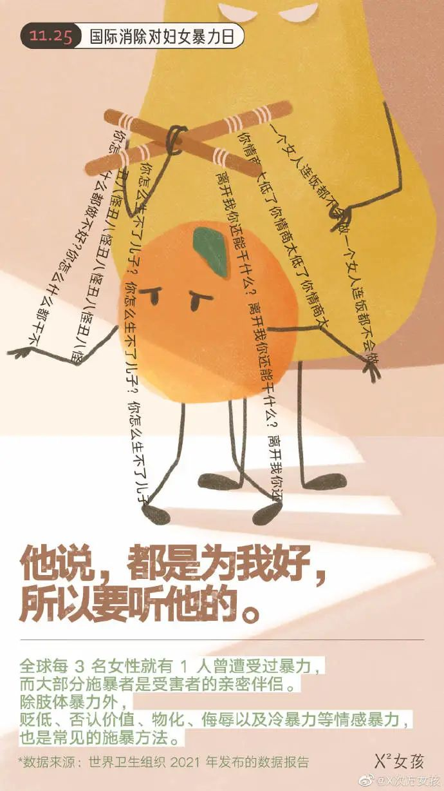
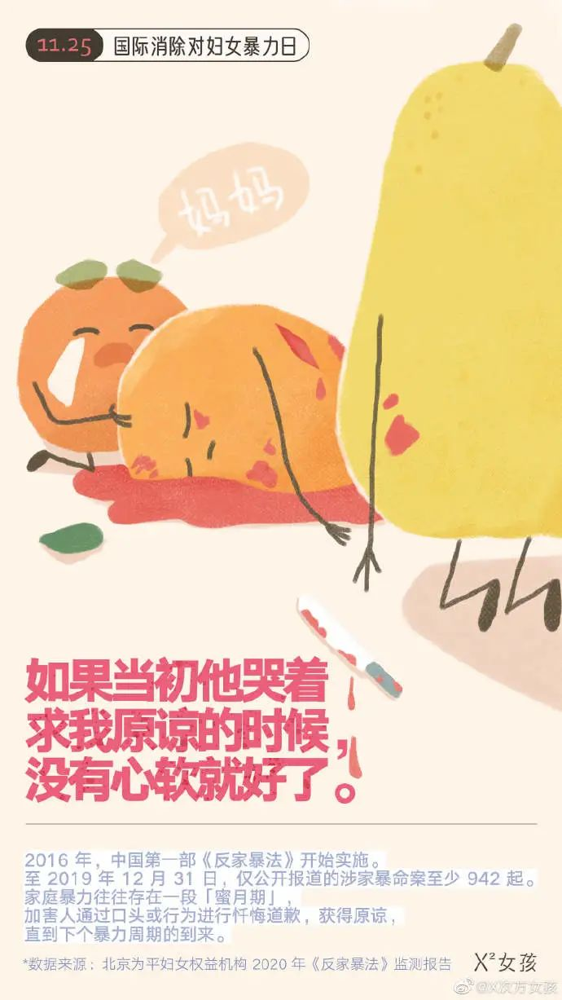
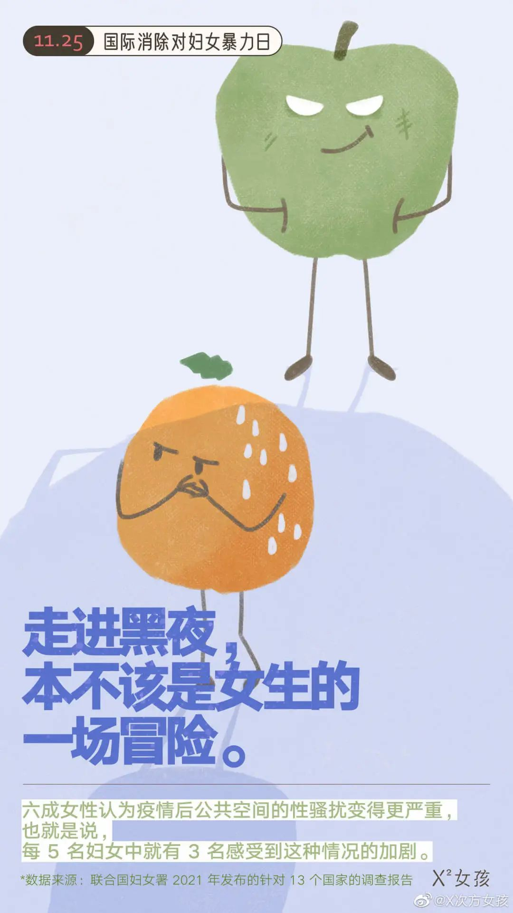
9
今天国际消除对妇女暴力日
《看不见的女性》这本书里提到过两组触目惊心的数据：
1.巴西的一项调查发现，三分之二的女性在旅途中遭受过性骚扰和暴力，其中一半是在公共交通工具上。有同样遭遇的男性比例为18%。
2.百分之八九十的受害者不会选择报案。纽约地铁系统中96%的性骚扰和86%的性侵犯受害人从未报案，伦敦90%的受害者不曾报案。
这本书用事实和数字，讲述着女性被忽视消声的经历。
这个世界每天总有悲剧上演，而占世界人口一半的女性群体更承受着存在缺失。看见、传播、讲述女性缺席的故事，大概是我们为数不多力所能及之事。
“献给不屈的女性：继续当一个难缠的人。”
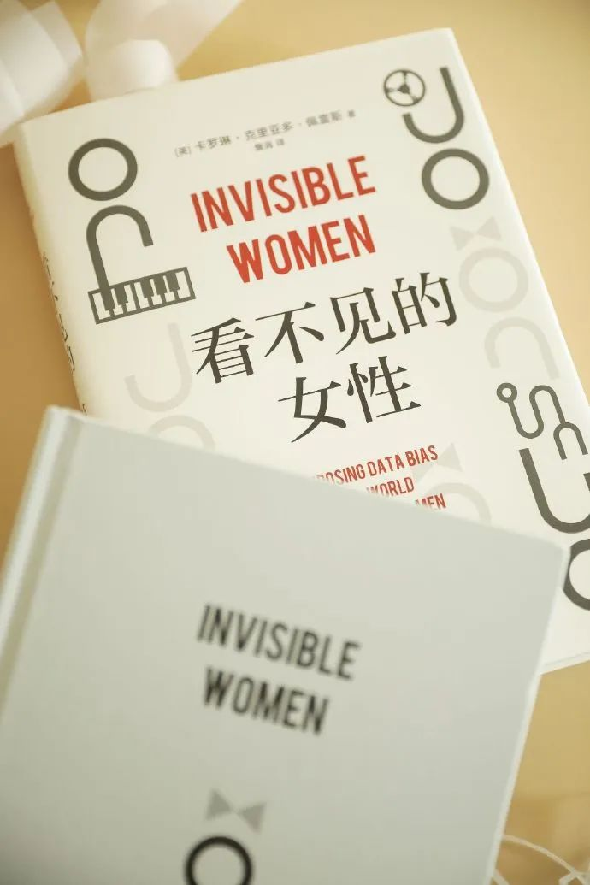

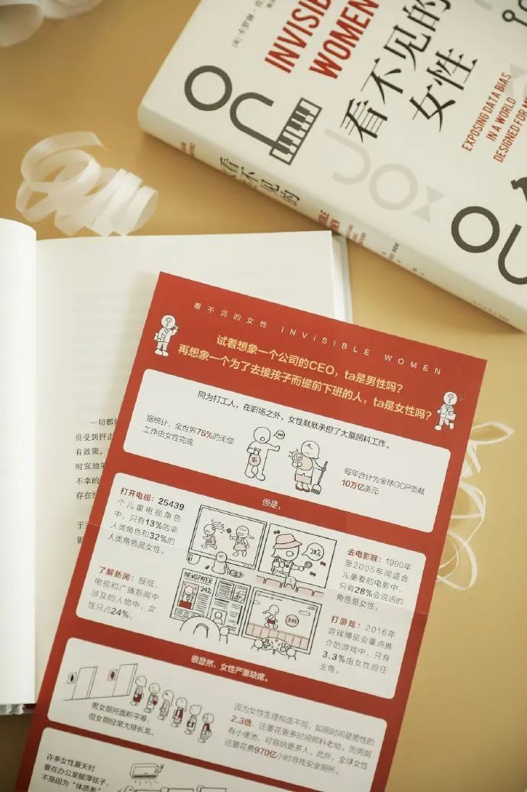
10
桂林急诊科医生强制猥亵女患者
@郑虞美要坚强
案发一周后，我终于能平静下来回想，我这辈子所遭遇的最不想发生的事情。
21号凌晨，桂林市妇幼保健院急诊科主任程某英，趁深夜四下无人之际，借问诊之名，强制猥亵、侮辱女患者。
目前，桂林当地警方认为，有犯罪事实发生，已刑事立案，并对他采取刑事强制措施（我有书证）。
当我拿到刑事立案告知书后，再次到涉事医院，犯罪嫌疑人的个人宣传照仍高高挂在墙上，同时，该院党委书记秦某明、院长卢某华毫无歉意，正眼都不看我一眼。
我问医院是否开展了自查自纠，他们沉默。院方两位负责人漠视的样子，让我感觉很无助。
相比于去年深圳一位医生被指性骚扰患者后，医院决定解聘涉事医生，桂林的这家医院无视医生法律问题，也无视医生的道德作风问题。
我作为患者，我期待医院的医生都是可以信赖和备受尊敬的，我期待自己孤身一人当面临非法侵害时是可以紧急求助的，我期待事件发生后医院能有相应机制能充分尊重并安抚受害者的。
医院的态度让我怀疑：是不是正因为医院的管理和监督失职，才让程某英可以肆无忌惮。
【1】
他先是右手拿着听诊器从我的上衣领口伸进衣服里，（我生病两天衣服汗湿没有穿内衣），然后左手伸进衣服里揉我胸部隐私部位，持续三次左右，又拿出听诊器，只把手伸进去揉我另一边胸部隐私部位。
当时我身体极度虚弱，完全无力反抗，连抬起胳膊的力气都没有，甚至连呵斥他的声音都发不出。他在摸完我胸部隐私部位后，又面带笑容地掀开被子，说要听我腹部的情况，开始摸我腹部，并把手径直伸向下身，摸到了我的下身隐私部位。结束猥亵行为之后，他走出留观室，还关掉了灯。
躺在床上，屈辱的感觉让我一直流泪。我委屈、羞耻、无助，想死的心都有了。我难受得奄奄一息，指望医生治病救人，对方却趁虚而入，他真是禽兽，或者说禽兽不如。他的猥亵行为让我感觉自己不是一个“人”，我没有尊严，我没有人格，我什么都没有，我只不过是一个可以被人任意揉搓和侮辱的物品，我正常就医也可以被人侵犯，我是一滩供人发泄兽欲的肉体。
当时我已十分害怕，医院对于我就是个危险的地方。留观室非常静，只剩我一人，前半夜小孩打针哭闹的声音也都消失了。被猥亵后我躺在病床上，四周漆黑，我看着天花板，每听到他的脚步声走近，我都会剧烈心慌、浑身发抖。
我知道当晚的值班医生只有他一个，因为他说他看我难受要送我回酒店，但当晚值班的只有他一个，他说自己走不开。
我感觉自己像砧板上的鱼肉，万一他对我再进行进一步的犯罪行为，我仍将无力反抗，我当时真的彷徨！无助！羞耻又慌张！
凌晨2时许，我硬撑自己无力的身体，叫了车回住处。到酒店后，我躺在床上，闭上眼睛全是他对我色眯眯笑着的那张脸，把手伸进我衣服领口的画面，迷迷糊糊睡着后，做的也都是关于他猥亵我的噩梦。
【2】
早晨8点多，他给我打电话，说他要来酒店看我，说我特别像他前女友，对我有感情什么的。听到这话，我立马就知道，他完全是故意，他就是在猥亵我。
我在电话里问他，“像你前女友，这就是你摸我胸的理由么？”他开始在电话那头装信号不好，装听不见，就挂掉了电话。
我微信给他发了一长段话陈述他凌晨做出的犯罪行为，并称需要一个书面的道歉。半分钟后，看他没有回复，我直接打过去电话，他接了之后，我让他看微信。
20秒后，他在电话里一直给我道歉，整个通话过程大概9分钟，其间他承认了犯罪过程与犯罪动机。
在电话里，他说自己刚离婚，感情不顺，说手伸进去碰到我的下体隐私部位，说自己是一时冲动。他不断道歉，坚持要来酒店看我，还说要带我去吃羊肉，他为表歉意还说以后我到桂林要做任何事都可以找他帮忙。
听着他的声音，我愤怒得喘不过气，手抖得握不住手机，我太难受了，他不仅不认为自己的行为伤害了我，还为犯罪行为找这么多借口！
【3】
我被他不知悔改的态度彻底给伤害了。存好电话录音，我拨通了报警电话。
桂林当地辖区民警接出警迅速，还专门协调安排了两位女警察给我做笔录，非常照顾我的情绪。
在这里，我要为桂林市公安机关竖起大拇指，尤其是为叠彩派出所点赞！谢谢你们，非常感谢。
这也让我感受到桂林这座城市侦查机关的温情。你们让我这个游客感受到，你们没有辜负桂林是座旅游城市的盛名。
23日，我就收到了警方给我的刑事立案告知书。
这也排除了我早前的各种疑虑，因为这件事我也经过自我怀疑的阶段，但我选择报警后才明白，真正让自己不受伤害的方式，是不压抑自己的感受，勇敢维护自己的权益。
如果选择忍气吞声，那噩梦将伴随自己一辈子，也会一直用自我怀疑与自我攻击来欺骗自己。
阻止了犯罪嫌疑人在此后行医过程中猥亵其他妇女儿童的可能，这件事，我非常自豪。同时，如果你被程某英诊治时，遭遇类似经历，请联系我。
桂林市妇幼保健院急诊科，门前栏杆上有标语：担当为要。我想请问，你们担当了什么？
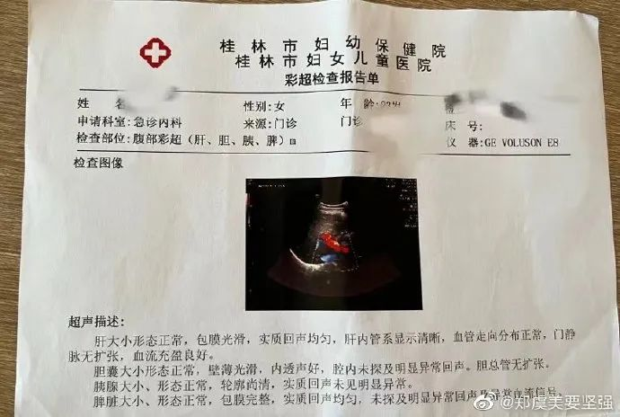

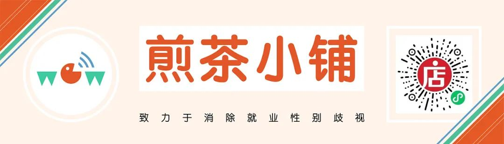